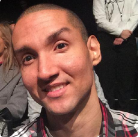

<section> 
      <div class="box col-9 middle">
        <h1>About Me</h1>
          <p>First off thank you for taking time out of your busy day to have a look at my website!!!</p>
      
          
          
          <p>First thing you will learn about me is that I love technology.  Been fascinated by it since I was very young.  I was the kid that every friend and family member after saying hello was a question about their computers.  Which still happens to this day.  I got into programming a little later in my life then most stories you have probably read or heard.  I am in my early thirties and used to work as a records clerk. Then a records manager for two prestigious law firms for eleven years.  At the time I enjoyed it since I was using technology to make the world of paper that lawyers have for their cases manageable.  I was making a good living doing this but after some time I realized my hobby of programming was what I really wanted to peruse.  So I saved for a few years and quit my job as a records manager and went back to school full time.  Living off of nothing but my savings to pay rent and survive.  I did this till I graduated from New York City School of Technology with Magna Cum Laude this past summer.  </p>
          
          <p>I look at the years spent in records management as a plus for me going forward.  I learned how to manage people with different personalities to get the job done in an efficient manner.  I know how to showing respect for others beliefs and values.  Which is very important when working with others.  I learned how to make employees and myself happy at work by doing meaningful projects.  Being able to schedule my time properly and how to project my voice in a large room.  That last one took me a while to learn, public speaking at first was very hard but now it’s like second nature.</p>
          
          <p>I had an internship with Quantilus Inc. over the summer.  I was working as a Big Data Engineer in their consulting branch.  They taught us how to use Big Data frameworks to do queries on huge databases within HDFS.  They also taught us how to use MVC web frameworks to do data analysis on the results.  This was a fun experience, first off I loved working with cutting edge tech.  And having like-minded individuals as coworkers was a huge plus for me.  Since I had experience as a manager I was appointed as a team leader in charge of working on a charting library.  We were told not to use D3.js for this task or any other charting library. We were also told to use only HTML, CSS, JavaScript and AngularJS. The library was used by the other team to show results of their queries.  </p>
        
          <p>I knew I wanted to try a real world challenge as a web developer so I contacted a family member who runs a successful investment firm call PrimeX.  I pitched him the idea/drawing of what I can accomplish by doing a website for his firm using more modern techniques.  Since his website was lacking responsiveness and look very dated.  After the pitch he immediately hired me for this job.  I created his backend and frontend for his website.  And made him a site that better fits his firm.  </p>
                    
          <p>I got referred to a startup apparel company called TopGearNY.  They told me they have products and want me to start and help them bring their e-commerce business to fruition.  First thing I did of course was to get their domain registered and get all the social media pages setup.  Then I could start working on their website. I will be the webmaster for this site after it launches soon.</p>

          <p>I am now working as a freelance full stack web developer using the MEAN stack as my base for my web apps and web sites.  I am currently working on a few projects and will update the site as projects go public.  Down the rabbit hole I go into the world of web development.  If you made it this far I want to say thank you again!!  I hope I did not bore you will my story and I hope you can really see who I am.  My story is not even close to being done, I await my new adventures as a Web Developer.  I am very passionate about learning how I can become better at my craft.  And I will keep learning for the rest of my life.</p>
          
          <p>-Richard C. Felix</p>
          
          <p>
            <a href="https://www.linkedin.com/pub/richard-c-felix/87/585/130" target="_blank" class="link tooltip" title='Linkedin'><i class="fa fa-linkedin-square fa-2x"></i></a>
            &nbsp;&nbsp;
            <a href="https://www.google.com/+RichardFelix10002" target="_blank" class="link tooltip" title='Google Plus'><i class="fa fa-google-plus-square fa-2x"></i></a>
          </p>
      </div>
    </section>